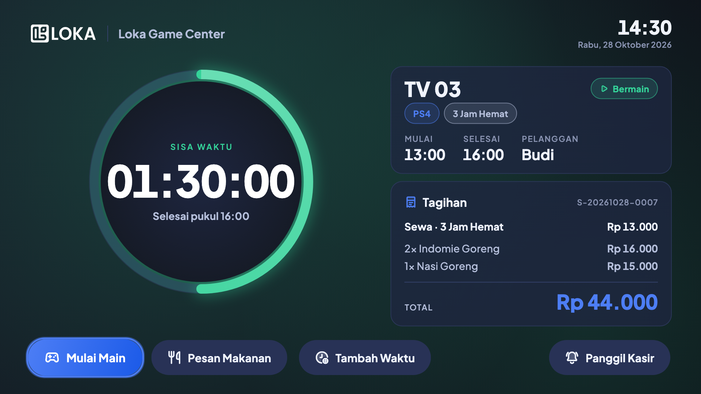

Loka Kasir BillingBilling rental PS & warnet
BARURENTAL PS & WARNET
Rental PS: timernya jalan sendiri di tiap TV.
Kenalan dengan Loka Kasir Billing, sistem billing untuk rental PlayStation dan warnet.

Tampilan di TV saat sesi berjalan · data contoh